Guitars
| Image | Manufacturer | Description |
|---|---|---|
| 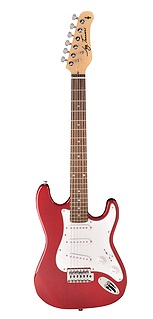 | Jay Turser | Jay Turser JT-30 classic style double cutaway Lightweight 3/4 size solid body - maple neck, rosewood fingerboard, 3 single-coil pick-ups, 5-way selector switch, 1-V & 1-T, full-face white pick guard, standard tremolo and die-cast machines. Price: $99.99 |
| 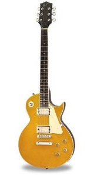 | Jay Turser | Jay Turser Vintage Les Paul style single cutaway Solid body - contoured, gold metallic top/black body, mahogany set neck, rosewood fingerboard, 2 covered humbucking pick-ups, body binding on top and back, 2-Volume 2-Tuner and die-cast machines Price: $219.99 |
| 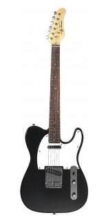 | Jay Turser | Jay Turser JT-LT Telecaster classic style single cutaway Lightweight solid body, maple neck with rosewood fingerboard, 2 pick-ups, volume and tone controls, die-cast machines Price: $159.99 |
| 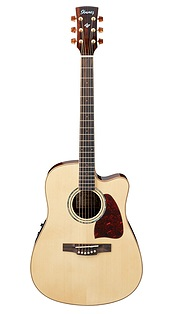 | Ibanez | Ibanez AW30ECE Steel-string Acoustic-Electric Solid Engelmann spruce top, mahogany back and sides, abalone rosette, neck and body binding, 42.5mm saddle width, 645mm scale length, cutaway design, Fishman Sonicore pickup with Ibanez SST preamp, integrated tuner, brown pearl tuning machines. Price: $169.99 |
| 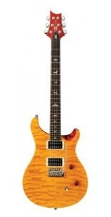 | PRS | PRS SE Custom 24 The Paul Reed Smith SE Custom 24 features SE HFS and SE Vintage Bass pickups, Volume and Tone controls with a 3-way toggle, a PRS designed tremolo, bird inlays and a wide thin neck Price: $1049.99 |
| 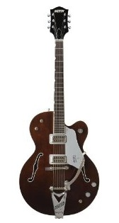 | Gretsch | Gretsch Guitars G6119-1962FT Single cutaway, laminated maple body, 2 high sensitive Filtertron pickups, 3-position toggle, signature guitar of Chet Atkins Price: $1499.95 |
Basses
| Image | Manufacturer | Description |
|---|---|---|
| 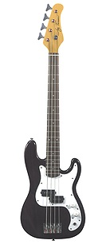 | Jay Turser | Jay Turser JTB-40 Maple neck, rosewood fingerboard, split pick-up Price: $115.00 |
| 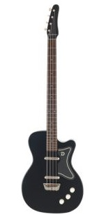 | Danelectro | Danelectro '56 Bass Masonite, laminated wood frame, maple bolt on neck, rosewood fretboard, pearloid inlays, rosewood bridge Price: 379.95 |
Drums
| Image | Manufacturer | Description |
|---|---|---|
| 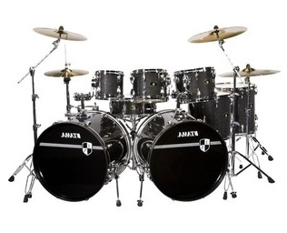 | Tama | Tama Imperialstar 8-piece Double Bass Drum Set 100% poplar 6-ply/7.5mm shells, precise bearing edges, 100% glued finishes, original small lugs, drum heads, accu-tune bass drum hoops, spur brackets, tom holder, tom brackets, 22 x 18" Kick Drums (two), 8 x 7, 10 x 8 and 12 x 9" Toms, 14 x 14 and 16 x 16" Floor Toms, 14 x 5-1/2" Matching Snare Drum Price: $2499.99 |
| 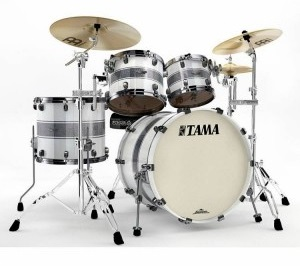 | Tama | Tama Starclassic 4pc Bubinga Drum Set with Mount Starclassic Bubinga shells, die cast hoops, air cushioned floor tom legs, claw hooks, hold tight washers, Star Cast mounting system, bass drum spur bracket, Evans heads, 18x22 bass drum, 8x10 tom, 9x12 tom, 14x16 floor tom Price: $1499.99 |
| 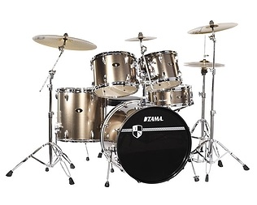 | Tama | Tama Imperial Star Standard 5-piece Drum Set 100% poplar 6-ply/7.5mm shells, precise bearing edges, 100% glued finishes, original small lugs, drum heads, accu-tune bass drum hoops, spur brackets, tom holder, tom brackets, 22 x 18" Kick, 10 x 8 and 12 x 9" Toms, 16 x 14" Floor Tom, 14 x 5-1/2" Snare Drum Price: $559.00 |
Amplifiers
| Image | Manufacturer | Description |
|---|---|---|
| 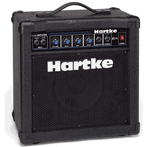 | Hartke | Hartke B200 20-Watt Bass Combo Amp 1x8" Paper driver, 20 watts, Signal-To-Noise ratio - 67 dB, Dynamic Range: 80 dB, Size - 14.6" x 15" x 9.5", Weight - 25lb. Price: $121.50 |
| 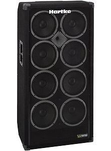 | Hartke | Hartke 810XL Bass Amplifier Cabinet 8 x 10" Aluminum Drivers, 800 Watts, Highly dampened sealed enclosure, Casters & Rear handle or Tiltback transport, Size - 48" X 24" X 16", Weight - 145lb. Price: $780.00 |
| 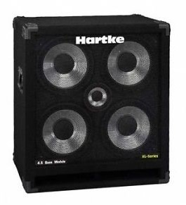 | Hartke | Hartke 4.5XL Bass Amplifier Cabinet Custom Hartke 5" Aluminum-Cone High-Frequency Driver, Four Hartke XL 10" Aluminum-Cone Bass Drivers, 400 Watts, Frequency Response - 30 Hz To 12 kHz, Voice Coil - 1.5", Parallel 1/4" Inputs,Size - 27" X 24" X 18", Weight - 98lb. Price: $489.75 |